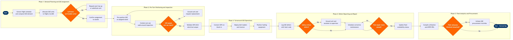

Ground Support Equipment (GSE) Management
Ground Operations & Airport Services › Ramp & Turnaround Operations · 16 L4 steps · 5 phases · 5 decision gates · Updated 2026-03-19 14:30
📊
Process Flow Diagram (BPMN)

📋
L4 Process Steps
| Step | Step Name | Role / Swim Lane | System | Input | Output | KPI | Dec? | Exc? |
|---|---|---|---|---|---|---|---|---|
Phase 1 1.1 |
Extract flight schedule & compute GSE demand | Ground Operations Planner | SITA Airport Management System (AMS) | Inbound/outbound flight schedule, stand allocation plan, aircraft type mix | GSE demand matrix by stand, flight, and equipment type | GSE demand forecast accuracy ≥95% vs actual utilisation | N | N |
| 1.2 | Allocate GSE units to flights via AMS rules | GSE Fleet Controller | SITA Airport Management System (AMS) | GSE demand matrix, current GSE fleet registry with asset status | GSE-to-flight assignment schedule published to ramp supervisors | GSE assignment completion ≥60 min before first departure of each wave; compliance ≥95% | N | N |
| 1.3 | Confirm GSE serviceability against maintenance roster | GSE Maintenance Supervisor | AMOS by Swiss AviationSoftware | GSE assignment schedule, open work orders, scheduled maintenance calendar | Confirmed serviceable GSE list; pool shortfall flag if serviceability rate below threshold | GSE fleet serviceability rate ≥92% at start of each operational day | Y | N |
Phase 2 2.1 |
Pre-position GSE at assigned stand before block-in | Ground Equipment Operator | SITA Airport Management System (AMS) | Confirmed GSE assignment, inbound ETA from AMS flight information display | GSE physically staged at correct stand ≥30 min before block-in | On-stand pre-positioning compliance ≥95% of turns; late positioning incidents ≤2% per month | N | N |
| 2.2 | Conduct pre-use walk-around inspection per IATA AHM 913 | Ground Equipment Operator | Ramco Aviation | IATA AHM 913 inspection checklist, equipment logbook from prior shift | Completed pre-use inspection record; pass/fail status logged in Ramco | Pre-use inspection completion rate 100%; open defects from prior shift actioned before use | Y | N |
| 2.3 | Validate GPU/ACU electrical output and hose integrity | GSE Technician | AMOS by Swiss AviationSoftware | Pre-use inspection pass record, GPU/ACU test equipment readings | Voltage/frequency validation report; unit cleared or grounded | GPU/ACU pre-use pass rate ≥98%; voltage within ±2% of 115V AC / 400 Hz spec | N | Y |
Phase 3 3.1 |
Connect GPU and switch aircraft to ground power on block-in | Ramp Agent | Amadeus Airport Management | Block-in confirmation from AMS, GPU readiness status | Aircraft on external ground power; APU shutdown initiated by flight crew | Aircraft on ground power within 3 min of block-in; APU shutdown compliance ≥90% of turns | N | N |
| 3.2 | Deploy belt loaders and baggage tractors for cargo transfer | Ramp Supervisor | SITA Airport Management System (AMS) | ULD/baggage load plan from departure control system, belt loader assignment | Belt loaders and tractors positioned and operational at aircraft doors | Belt loader/tractor on-stand on-time rate ≥95%; FOD incidents attributable to GSE ≤0 per quarter | N | Y |
| 3.3 | Position fueling equipment and coordinate refueling start | Fuel Coordinator | Honeywell GoDirect | Fuel uplift order from flight dispatch, fueling equipment availability status | Fuel truck or hydrant dispenser positioned; refueling sequence initiated | Fueling equipment on-stand within 10 min of block-in; fueling completion ≥15 min before STD | N | N |
Phase 4 4.1 |
Log GSE defect in maintenance system with fault code | Ground Equipment Operator | AMOS by Swiss AviationSoftware | Observed defect during or after turnaround, equipment ID and location | Defect record with fault code, severity, and timestamp in AMOS | Defect logged within 15 min of identification; compliance ≥98%; zero unlogged defects on end-of-day fleet check | N | N |
| 4.2 | Assess safety criticality and ground unit if required | GSE Maintenance Supervisor | AMOS by Swiss AviationSoftware | Defect record, safety-criticality matrix (airline-proprietary), regulatory requirements | Safety classification (critical / non-critical); out-of-service tag issued for critical units | Safety-critical GSE grounded within 30 min of defect identification; zero safety-critical units operated beyond grounding threshold | Y | Y |
| 4.3 | Execute corrective maintenance and post-repair check | GSE Technician | AMOS by Swiss AviationSoftware | Work order from AMOS, spare parts from stores, OEM repair manual | Repaired GSE unit with completed work order; post-repair serviceability test result | Corrective maintenance turnaround time ≤4 hr for critical GSE; ≤24 hr for non-critical; first-time fix rate ≥85% | Y | N |
| 4.4 | Update GSE fleet availability status in AMS | GSE Fleet Controller | SITA Airport Management System (AMS) | Work order closure in AMOS, post-repair serviceability confirmation | GSE unit status updated to 'Serviceable' in AMS fleet registry | Fleet availability status updated within 1 hr of repair closure; AMS–AMOS sync accuracy ≥99% | N | N |
Phase 5 5.1 |
Compile monthly GSE utilisation and MTBF KPIs | Ground Operations Analyst | Tableau | AMOS maintenance history, AMS utilisation logs, defect register extract | Monthly GSE performance dashboard: MTBF, downtime rate, utilisation by equipment class | GSE MTBF ≥500 operating hr; fleet downtime rate ≤3%; dashboard published by 5th of each month | N | N |
| 5.2 | Assess fleet adequacy and identify replacement candidates | Ground Operations Manager | SAP S/4HANA Finance (FI/CO) | GSE performance dashboard, asset age register, peak-demand utilisation ratios | Fleet adequacy assessment; list of assets recommended for replacement or disposal | Fleet adequacy ratio ≥1.2× peak demand; assets beyond 10-yr economic life flagged for replacement within next budget cycle | Y | N |
| 5.3 | Initiate GSE procurement or lease request via SAP Ariba | Procurement Specialist | SAP Ariba | Approved fleet replacement list, capital budget allocation, airport authority concession terms | Purchase requisition or lease agreement raised in SAP Ariba; vendor shortlist for tender | Procurement lead time ≤90 days for standard GSE; ≤180 days for electric/specialist units | N | Y |
📋